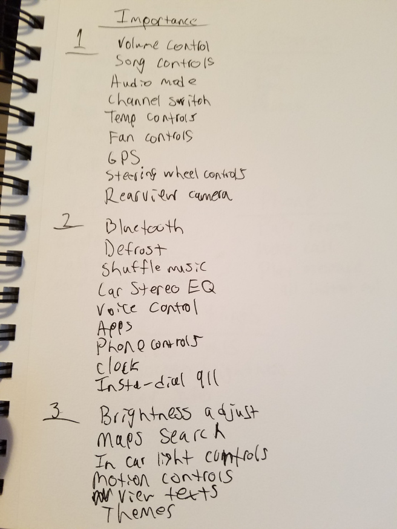
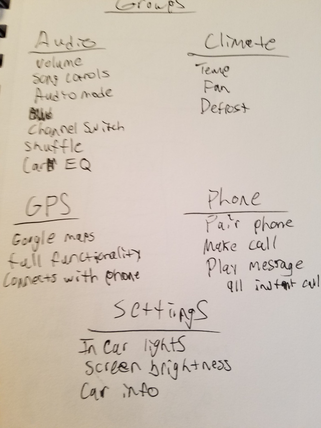
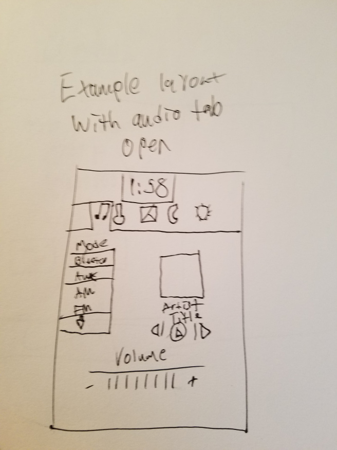
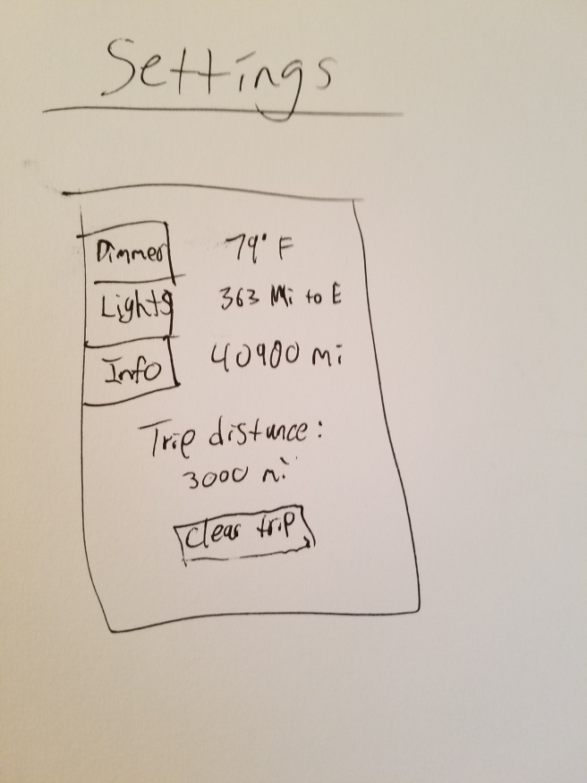

Designer, data fanatic, and storyteller.
The goal of this project was to design a new in-car touch screen system. The touch screen would be used to control multiple features of the vehicle, such as audio and temperature. We had a few reasons for wanting to create this design. First of all, we felt that most in-car touch screen systems are not very good. They are usually not very intuitive, or are missing features they should have. We also thought that this design would be a great way to implement multiple different prototyping methods that we learned in class. We chose to create a paper prototype, a wizard of oz, and a medium fidelity digital prototype.
The first thing done was some user research. We prepared a card sort for 3 people. They were given multiple car functions, and told to both rank their importance, and separate them into groups. They were also given the option to say that they didn’t think a certain function should be a part of the touch screen, or that it should also have a physical button somewhere else on the dashboard. The following pictures show how they ended up being sorted, as well as the initial sketches of the prototype.




The next task was, based on the sketches, create a paper prototype of user interface we would create. It needed to be clean, and simple to use. If it wasn’t, then it would not work well as a controller while you are driving.
For the map functionality, we decided that it would use google maps, rather than a built in GPS functionality. The reasoning for this was simple, google maps is just better. I find that even though my car has it’s own GPS, I end up using Google Maps on my phone. This system would allow you to sync up the Maps app on your phone with the in-car touch screen. This way you can look at the GPS on the screen, but using the app on your phone.
The people I had test out the design all thought it was pretty good. They found it simple and intuitive. One of the users tested had a touch screen system in their car currently, and thought that the general idea of this design was better than the one they use now.
We decided that the vehicle should use both motion and voice commands to control parts of the system, as these things distract you much less while driving than looking at a screen. A “wizard of oz” would be the best way to test this, as we could fool the user into thinking that they are actually controlling the vehicle. To do this, we needed the user to think that they were actually being recorded, voice and motion. We taped a phone to the dash, and set a microphone below it. These were both plugged into a computer in the back seat. They weren’t actually doing anything, but the user was told they were being recorded, and that they were controlling the system. In reality, I was controlling things on my phone in the back seat.
The user agreed that motion and voice controls were a good idea to prevent distracted driving. He thought that voice commands were much better than motion, however. He thought that using voice was both easier and less distracting than using motion controls. He also mentioned that voice control integration for the GPS system would be something that he would use. Controlling the GPS via the touch screen was hard to do, and he wished he could control his own with his voice, to search for places or to give it an address to go to.
The final design, a medium-fidelity digital prototype, was based off of the paper prototype design. It was created in proto.io, and ran on a tablet since that is the closest thing available to an in-car touch screen device. The design was kept very simple, and sleek. It needed to be easy to see, and simple to control. The buttons and controls were big, and the background was kept white. The emphasis here was on ease of use, and not visual fidelity. This final proto.io design was created by Qiaohui Shen.
This project was a great way to further use the prototyping skills we have learned in this class. We created a design utilizing all of the possible steps. We started with user research, then created sketches, then a low fidelity prototype, and finally a high fidelity prototype. By starting at the bottom, and trying to find the best solution, we gained further appreciation for the ideas behind any design decision. In the end, we created a design that I would rather use than the design my own car’s touch screen uses.